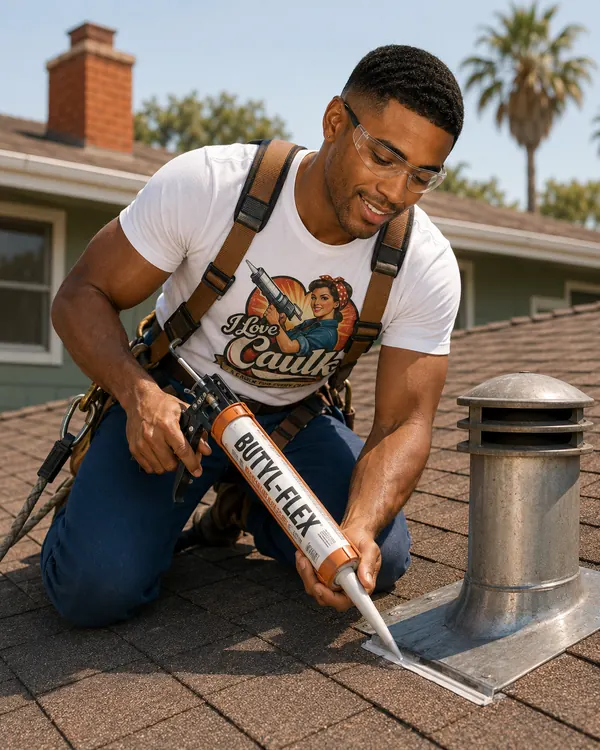

Gutter seams and end caps
Metal that expands and contracts in the sun. Gutter sealant goes on the water side of the seam.
Our pick: DAP Butyl-Flex, Geocel 2300 Tripolymer (Amazon)
Caulk by room
Elevate your caulk
Roofing caulk and gutter sealant are not the place to economize. They need to flex, stick to metal and asphalt, and hold up through years of freeze-thaw abuse, all while you're on a ladder hoping the neighbors aren't watching. Butyl rubber and polyurethane formulations dominate up here.

Every joint in the room, what goes in it, and why. The color bar matches the formulation.
Metal that expands and contracts in the sun. Gutter sealant goes on the water side of the seam.
Our pick: DAP Butyl-Flex, Geocel 2300 Tripolymer (Amazon)
Where counter-flashing tucks into masonry, a roof-rated sealant keeps water from following it in.
Our pick: Geocel 2300 Tripolymer (Amazon), Sashco Through the Roof!
A dab of roof sealant over exposed fasteners on flashing or ridge caps.
Our pick: Sashco Through the Roof!
Sealant can buy time on a cracked boot. Replacing the boot is the real fix.
Our pick: Sashco Through the Roof!
Small crown cracks take a masonry or crown sealant; flashing takes polyurethane.
Our pick: Sikaflex-1a (Amazon)
Every lag bolt through the roof gets sealant under and over it.
Our pick: Geocel 2300 Tripolymer (Amazon)
Tubes worth a place in your cart for this room, and the joint each one suits. Price runs from $ (budget) to $$$ (pro grade).
| Product | Type | Best for | Why | Price | Buy |
|---|---|---|---|---|---|
| DAP Butyl-Flex | Butyl rubber | Gutters, flashing, shingle seams | Works wet or cold, sticks to asphalt | $ | Maker's page |
| GE Gutter Silicone 2 | 100% silicone | Metal and vinyl gutters | 30-minute rain-ready, wet or dry application | $–$$ | Maker's page |
| Henry 289 White Roof Sealant | Elastomeric latex | Flat and low-slope roofs, vents | Trowel or gun, UV-stable | $–$$ | Maker's page |
| Tremco Dymonic FC | Polyurethane | Fascia and soffit joints | Sag-resistant, high movement | $$$ | Check price on Amazon |
| GE Metal Silicone 2 | 100% silicone | Sheds, metal roofs, vents, RVs | Won't discolor chrome, bronze or nickel | $–$$ | Check price on Amazon |
Amazon links are affiliate links: if you buy through one, we may earn a small commission at no extra cost to you. It never decides what we recommend.
One foot out for every four feet up, on firm level ground, with someone nearby. Never lean on the gutter.
Scoop debris, scrub off old sealant and rust with a wire brush, and let it dry completely.
Apply gutter sealant along the seam on the inside, where the water runs, and feather it smooth.
Dab each fastener head. That's where drips start.
Give it the cure time on the tube, then run a garden hose down the gutter and watch.
Sealant is maintenance. Failed flashing, cracked boots, and worn shingles need repair or replacement.
Some roof sealants are rated for damp or wet surfaces; most sealants aren't. Only trust the tube.
Anytime the roof is steep, high, or wet, or the leak is under the shingles. No caulk is worth a fall.
More answers in the full FAQ, or let the Caulk Finder pick for you.